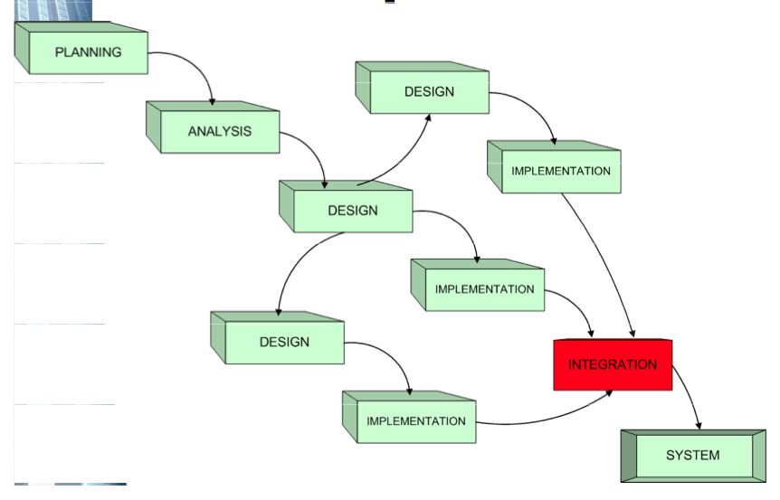
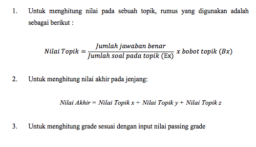
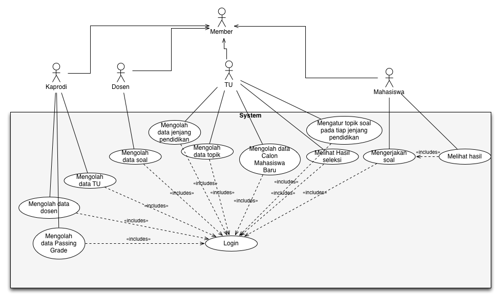
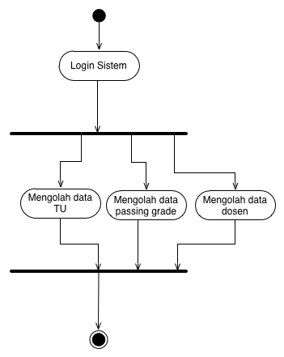
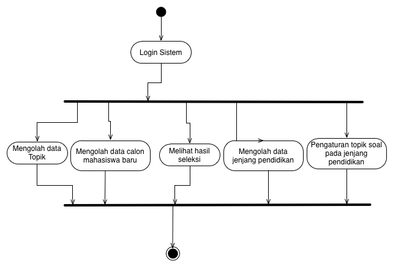
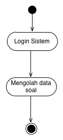
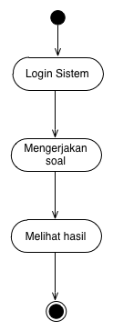
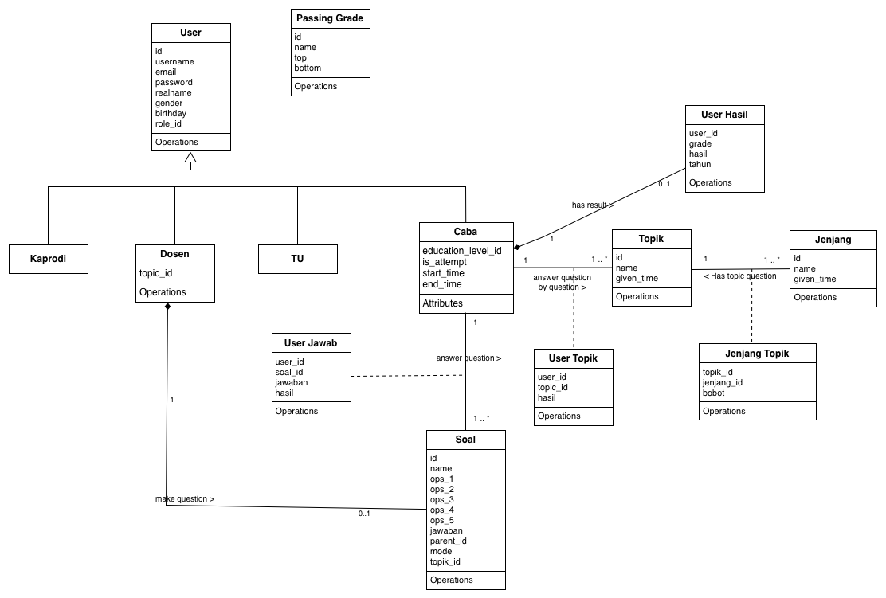
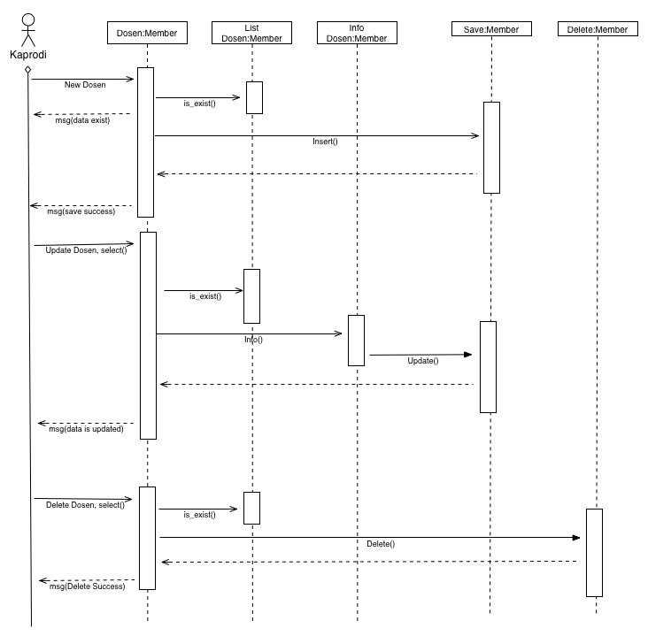
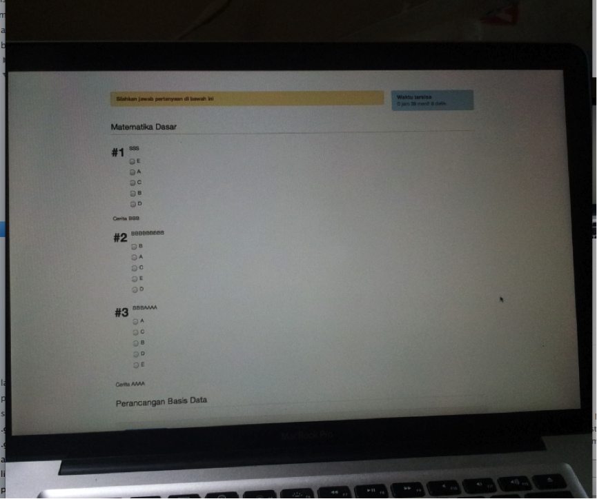

APLIKASI UJIAN SARINGAN MASUK FAKULTAS ONLINE
DENGAN FITUR LOCK SCREEN PADA FAKULTAS ILMU KOMPUTER
UNIVERSITAS MERCU BUANA JAKARTA

Oleh :
Purwandi M ( 41508110084 )
Purwandi M ( 41508110084 )
Program Studi Teknik Informatika
Fakultas Ilmu Komputer
Universitas Mercu Buana
Jakarta, 4 Agustus 2012
Fakultas Ilmu Komputer
Universitas Mercu Buana
Jakarta, 4 Agustus 2012
Latar Belakang
- Ujian sekarang dapat dilakukan secara online melalui peramban web
- Ujian saringan masuk online yang ada saat ini masih terdapat celah untuk melakukan tindak kecurangan.
- Dalam pelaksanaan, calon mahasiswa baru dapat membuka jendela baru di peramban web maupun perangkat lunak lainnya
- Perlu sebuah sistem yang dapat mengunci layar (lock screen)
Perumusan Masalah
- Bagaimana merancang dan membangun sistem perangkat lunak untuk pelaksanaan ujian saringan masuk secara online?
- Bagaimana mengimplementasikan lock screen pada sistem ujian saringan masuk online?
Batasan Masalah
- Terdiri dari beberapa topik mata pelajaran, dimana dalam sebuah topik memiliki bobot, waktu dan beberapa soal ujian
- Dapat berupa soal cerita, sehingga di dalam sebuah soal cerita dapat terdiri dari beberapa soal
- Soal ujian saringan masuk berbentuk pilihan ganda
- Sistem penilaian yang digunakan mempunyai rentang antara 0 sampai dengan 100
- Hanya bisa berjalan pada perangkat lunak web terbaru (HTML5 fullscreen API)
- Tidak bisa berjalan di browser handphone maupun smartphone
- Dalam pengembangan menggunakan PHP (Laravel Framework) dan untuk tampilan pengguna memakai Twitter Bootstrap
Tujuan
- Melakukan rancang bangun sistem ujian saringan masuk online agar pelaksanaan ujian dapat di lakukan dimana saja
- Mengimplementasikan fullscreen API untuk penguncian layar (lock screen) pada sistem ujian saringan masuk online
Manfaat
- Mengurangi tindak kecurangan yang terjadi pada saat ujian saringan fakultas secara online dilaksanakan
- Untuk pihak fakultas
- membantu proses administrasi
- menjaring calon mahasiswa baru yang memenuhi kriteria dan karakteristik masing-masing fakultas
- Untuk calon mahasiswa
- menghemat waktu dan biaya transportasi
- langsung mengetahui hasil ujian setelah selesai mengerjakan ujian
Metodologi Penelitian
Menggunakan metode rekayasa perangkat lunak model parallel development
Landasan Teori
- Rekayasa Perangkat Lunak Berbasis Objek
- SDLC
- Pemrogaman Berorientasi Objek
- PHP & Laravel PHP Framework
- Git Version Control
- HTML5
Prosedur Ujian Saringan Masuk
- Penentuan batas nilai minimal (passing grade) -> Kaprodi
- Pembuatan topik -> TU
- Pendataan jenjang pendidikan, pengaturan topik dan bobot topik pada setiap jenjang -> TU
- Pendataan dosen -> Kaprodi
- Pembuatan soal-soal ujian -> Dosen
- Pendataan calon mahasiswa baru -> TU
- Pelaksanaan ujian online -> Calon Mahasiswa
- Hasil seleksi -> Calon Mahasiswa
- Laporan -> TU
Penskoran USM
- tidak membatasi jumlah topik yang dibuat dan yang dipilih sebagai bahan ujian
- tidak membatasi jumlah soal
- dapat menentukan sendiri nilai passing grade
- dapat menentukan topik yang berbeda pada setiap jenjangnya
- setiap topik yang dipilih harus memberikan bobot
- penjumlahan dari semua topik harus berjumlah 100
Rumus Penskoran (berdasarkan asumsi)
Use Case Diagram
Activity Diagram




Class Diagram
Sequence Diagram
Implementasi dan Pengujian
Penyiapan Lingkungan Kerja
- Spesifikasi Kebutuhan Sistem Pada Area Kerja dan Pengujian
- Penyiapan Area Lingkungan Kerja (Local Environment)
- Penyiapan Perangkat Lunak Manejemen Kontrol
- Pembuatan Milestone dan Issue/Task

Pengujian
Proses pengujian menggunakan metode black box
Analisis Hasil Pengujian
- Proses pengelolaan data dapat berjalan dengan baik
- Lock screen dengan menggunakan fitur fullscreen api dapat berjalan dengan baik pada browser Google Chrome Versi 20.0.1132.57, Mozilla Firefox Versi 14.0.1, Safari Versi 6.0
- Pengacakan soal dan jawaban dapat berjalan dengan baik
- Countdown timer dapat di implementasikan ketika calon mahasiswa baru mulai mengerjakan soal ujian
- Aplikasi mampu memperlihatkan data calon mahasiswa baru yang telah selesai mengerjalan ujian pada hari tertentu dan dengan passing grade tertentu
Kesimpulan
- Aplikasi ujian saringan masuk online dapat bejalan dengan baik.
- Pengembangan dengan metodologi parallel development sangatlah mudah di implementasikan dengan menggunakan Git.
- Penggunaan kerangka kerja (framework) dalam hal ini Laravel (PHP Framework) dan Twitter Bootstrap (User Interface Framework) sangat memudahkan serta mempercepat proses pembuatan aplikasi.
- Fitur lock screen dapat di implementasikan dengan memanfaatkan teknologi full screen API yang terdapat pada peramban situs (browser) yang telah mendukung teknologi HTML5.
Saran
- Autentifikasi sistem saat ini hanya menggunakan nama pengguna (username) dan kata kunci (password) sehingga dalam proses autentifikasi sistem tidak tahu apakah dia memang benar-benar pengguna yang bersangkutan atau bukan, untuk itu penulis menyarankan agar dapat dilakukan pengembangan lebih lanjut pada fitur sistem pengenalan wajah pengguna.
- Proses pengolahan data calon mahasiswa baru masih bersifat manual, penulis menyarankan agar dilakukan pengembangan lebih lanjut pada fitur sinkronisasi data calon mahasiwa baru dengan menggunakan API Sistem Informasi Universitas Mercu Buana
- Perlu adanya fasiltas untuk melakukan reset jawaban calon mahasiswa baru yang terdapat pada menu tata usaha. Fasiltas ini sangat diperlukan ketika terjadi permasalahan diluar sistem seperti: listrik tiba-tiba mati dan koneksi internet terputus
Terima Kasih
APLIKASI UJIAN SARINGAN MASUK FAKULTAS ONLINE
DENGAN FITUR LOCK SCREEN PADA FAKULTAS ILMU KOMPUTER
UNIVERSITAS MERCU BUANA JAKARTA
Di susun oleh :
Purwandi M ( 41508110084 )
Purwandi M ( 41508110084 )
Program Studi Teknik Informatika
Fakultas Ilmu Komputer
Universitas Mercu Buana
Jakarta, 4 Agustus 2012
Fakultas Ilmu Komputer
Universitas Mercu Buana
Jakarta, 4 Agustus 2012